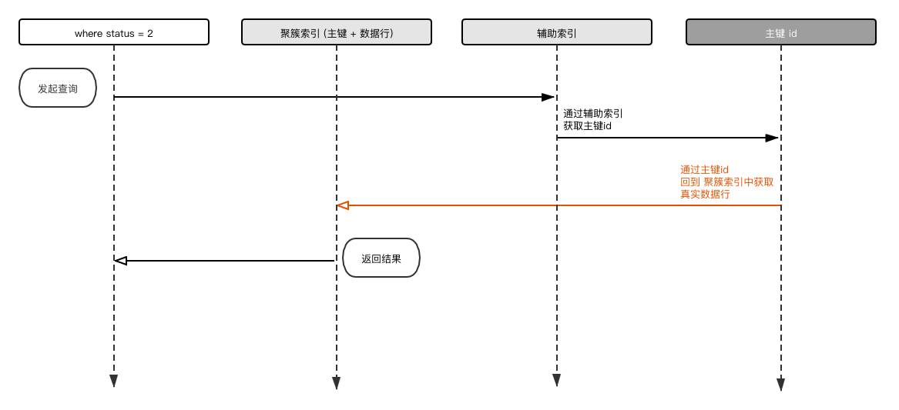

<!doctype html>
<html class="theme-next use-motion theme-next-mala">
<head>
  

<meta charset="UTF-8"/>
<meta http-equiv="X-UA-Compatible" content="IE=edge,chrome=1" />
<meta name="viewport" content="width=device-width, initial-scale=1, maximum-scale=1"/>


<meta http-equiv="Cache-Control" content="no-transform" />
<meta http-equiv="Cache-Control" content="no-siteapp" />


  <link rel="stylesheet" type="text/css" href="/vendors/fancybox/source/jquery.fancybox.css?v=2.1.5"/>


  <link href='//fonts.googleapis.com/css?family=Lato:300,400,700,400italic&subset=latin,latin-ext' rel='stylesheet' type='text/css'>


<link rel="stylesheet" type="text/css" href="/css/main.css?v=0.4.5.1"/>


  <meta name="keywords" content="sql," />


  <link rel="shorticon icon" type="image/x-icon" href="/favicon.ico?v=0.4.5.1" />


<meta name="description" content="最近在准备校招和面试, 见了很多人, 也想了很多问题; 有时候在问别人的时候听到一些回答, 才会意识到有些东西自己可能对细节了解的没有自己想象的那么清楚; 聚簇索引就是其中之一, 网上看了很多文章, 才发现能把这些概念讲清楚的人寥寥无几, 大部分是cp的, 于是就有了这篇文章;才学有限, 谬误之处欢迎指证;  先简单列个大纲，要是没有你需要的东西也可以节省点时间ʕ•͡•ʕ•͡•ʔ•͡•ʕ•͡•ʕ•">
<meta property="og:type" content="article">
<meta property="og:title" content="聚簇索引or聚集索引以及回表和索引覆盖">
<meta property="og:url" content="http://yoursite.com/2021/06/18/index_something/index.html">
<meta property="og:site_name" content="FOXMAN&#39;s club">
<meta property="og:description" content="最近在准备校招和面试, 见了很多人, 也想了很多问题; 有时候在问别人的时候听到一些回答, 才会意识到有些东西自己可能对细节了解的没有自己想象的那么清楚; 聚簇索引就是其中之一, 网上看了很多文章, 才发现能把这些概念讲清楚的人寥寥无几, 大部分是cp的, 于是就有了这篇文章;才学有限, 谬误之处欢迎指证;  先简单列个大纲，要是没有你需要的东西也可以节省点时间ʕ•͡•ʕ•͡•ʔ•͡•ʕ•͡•ʕ•">
<meta property="og:locale" content="en_US">
<meta property="og:image" content="http://yoursite.com/2021/06/18/index_something/is_0.png">
<meta property="og:image" content="http://yoursite.com/2021/06/18/index_something/is_1.png">
<meta property="og:image" content="http://yoursite.com/2021/06/18/index_something/is_4.png">
<meta property="og:image" content="http://yoursite.com/2021/06/18/index_something/is_2.png">
<meta property="og:image" content="http://yoursite.com/2021/06/18/index_something/is_3.png">
<meta property="og:image" content="http://yoursite.com/2021/06/18/index_something/is_5.png">
<meta property="article:published_time" content="2021-06-17T16:18:00.000Z">
<meta property="article:modified_time" content="2021-06-20T10:08:50.279Z">
<meta property="article:author" content="FOXMAN">
<meta property="article:tag" content="sql">
<meta name="twitter:card" content="summary">
<meta name="twitter:image" content="http://yoursite.com/2021/06/18/index_something/is_0.png">


<script type="text/javascript" id="hexo.configuration">
  var CONFIG = {
    scheme: 'Mala',
    sidebar: 'post'
  };
</script>

  <title> 聚簇索引or聚集索引以及回表和索引覆盖 | FOXMAN's club </title>
<meta name="generator" content="Hexo 5.4.0"></head>

<body itemscope itemtype="http://schema.org/WebPage" lang="en">

  <!--[if lte IE 8]>
  <div style=' clear: both; height: 59px; padding:0 0 0 15px; position: relative;margin:0 auto;'>
    <a target="_blank" rel="noopener" href="http://windows.microsoft.com/en-US/internet-explorer/products/ie/home?ocid=ie6_countdown_bannercode">
      
    </a>
  </div>
<![endif]-->
  


  <div class="container one-column page-post-detail">
    <div class="headband"></div>

    <header id="header" class="header" itemscope itemtype="http://schema.org/WPHeader">
      <div class="header-inner"><h1 class="site-meta">
  <span class="logo-line-before"><i></i></span>
  <a href="/" class="brand" rel="start">
      <span class="logo">
        <i class="icon-next-logo"></i>
      </span>
      <span class="site-title">UP IN THE AIR</span>
  </a>
  <span class="logo-line-after"><i></i></span>
</h1>

<div class="site-nav-toggle">
  <button>
    <span class="btn-bar"></span>
    <span class="btn-bar"></span>
    <span class="btn-bar"></span>
  </button>
</div>

<nav class="site-nav">
  

  
    <ul id="menu" class="menu ">
      
        
        <li class="menu-item menu-item-home">
          <a href="/" rel="section">
            <i class="menu-item-icon icon-next-home"></i> <br />
            Home
          </a>
        </li>
      
        
        <li class="menu-item menu-item-categories">
          <a href="/categories" rel="section">
            <i class="menu-item-icon icon-next-categories"></i> <br />
            Categories
          </a>
        </li>
      
        
        <li class="menu-item menu-item-archives">
          <a href="/archives" rel="section">
            <i class="menu-item-icon icon-next-archives"></i> <br />
            Archives
          </a>
        </li>
      
        
        <li class="menu-item menu-item-tags">
          <a href="/tags" rel="section">
            <i class="menu-item-icon icon-next-tags"></i> <br />
            Tags
          </a>
        </li>
      
        
        <li class="menu-item menu-item-about">
          <a href="/about" rel="section">
            <i class="menu-item-icon icon-next-about"></i> <br />
            About
          </a>
        </li>
      

      
      
    </ul>
  

  
</nav>

 </div>
    </header>

    

    <main id="main" class="main">
      <div class="main-inner">
        <div id="content" class="content"> 

  <div id="posts" class="posts-expand">
    

  <article class="post post-type-normal " itemscope itemtype="http://schema.org/Article">
    <header class="post-header">

      
      
        <h1 class="post-title" itemprop="name headline">
          
          
            
              聚簇索引or聚集索引以及回表和索引覆盖
            
          
        </h1>
      

      <div class="post-meta">
        <span class="post-time">
          Posted on
          <time itemprop="dateCreated" datetime="2021-06-18T00:18:00+08:00" content="2021-06-18">
            2021-06-18
          </time>
        </span>

        
          <span class="post-category" >
            &nbsp; | &nbsp; In
            
              <span itemprop="about" itemscope itemtype="https://schema.org/Thing">
                <a href="/categories/database/" itemprop="url" rel="index">
                  <span itemprop="name">database</span>
                </a>
              </span>

              
              

            
          </span>
        

        
          
        
      </div>
    </header>

    <div class="post-body">

      
      

      
        <span itemprop="articleBody"><p>最近在准备校招和面试, 见了很多人, 也想了很多问题; 有时候在问别人的时候听到一些回答, 才会意识到有些东西自己可能对细节了解的没有自己想象的那么清楚; 聚簇索引就是其中之一, 网上看了很多文章, 才发现能把这些概念讲清楚的人寥寥无几, 大部分是cp的, 于是就有了这篇文章;<br>才学有限, 谬误之处欢迎指证; </p>
<p>先简单列个大纲，要是没有你需要的东西也可以节省点时间ʕ•͡•ʕ•͡•ʔ•͡•ʕ•͡•ʕ•͡•ʔ•͡•<br>太长不看党可直接看每章小结;</p>
<span id="more"></span>

<ul>
<li>聚簇索引还是聚集索引</li>
<li>MyISAM 索引<ul>
<li>非聚簇索引</li>
</ul>
</li>
<li>InnoDB 索引<ul>
<li>聚簇索引</li>
<li>主键索引</li>
<li>辅助索引(二级索引)</li>
</ul>
</li>
<li>回表<ul>
<li>索引覆盖</li>
<li>索引下推</li>
</ul>
</li>
<li>小结</li>
</ul>
<h3 id="聚集索引还是聚簇索引"><a href="#聚集索引还是聚簇索引" class="headerlink" title="聚集索引还是聚簇索引"></a>聚集索引还是聚簇索引</h3><p>先说答案, 他们是同一个意思, 都是 Clustered Indexes;  这个困惑来自于很早之前的一次面试, 本来这个问题我已经忘记了; 但在看博客的时候偶然想起来一次面试中, 被问到这个问题 —— <strong>什么是聚簇索引, 它和聚集索引有什么区别?</strong> 现在看来当时面试官是在整我 ʕ•͡•ʔ …<br>后来为了搞清楚这件事, 我先后查了bing, 它给了我百度百科的答案; 然后看了wiki百科, 里面给出了同样的结论; 最终结合多篇对InnoDB 的博客和文章的描述; 加上《高性能My SQL》英文原版里第五章的描述: </p>
<blockquote>
<p>Clustered indexes aren’t a separate type of index. Rather, they’re an approach to data<br>storage. The exact details vary between implementations, but InnoDB’s clustered indexes actually store a B-Tree index and the rows together in the same structure.<br>– &lt; Higb Performance MySQL . Chapter 5 &gt;</p>
<hr>
<p>聚簇索引不是一种索引类型, 它表达的是数据的一种存放方式;<br>其细节依赖于数据库的具体实现, 在InnoDB 中, 聚簇索引在同一个结构中同时保存了B-Tree索引和数据;</p>
</blockquote>
<p>根据这个描述基本可以确定这个答案 : 它们是同一个东西, 只是在各种传送中因为一字之差给很多人造成了误解和混淆;<br>而在Oracle中, 聚簇的含义用来表达将多个表数据交错存储(聚簇表), 和这里说的聚簇索引关系不大;<br>为了措辞统一, 本文中一律采用聚簇一词(本文不讨论Oracel相关问题);<br><code>聚集索引和聚簇索引有区别吗?</code></p>
<p>如果非要说的话, 可以理解为InnoDB 的主键索引为聚集索引, 它将主键key和真实的数据存储在了同一个位置; 而聚簇索引则是描述这种存储方式的名词;</p>
<p>可以看看搜索结果, 这是bing的, 给的答案里写到了聚簇索引的英文为Clustred Indexes:<br><br>这是wiki百科的, 直接说到了二者为同一个意思:<br></p>
<h3 id="MyISAM索引"><a href="#MyISAM索引" class="headerlink" title="MyISAM索引"></a>MyISAM索引</h3><h4 id="非聚簇索引"><a href="#非聚簇索引" class="headerlink" title="非聚簇索引"></a>非聚簇索引</h4><p>MyISAM 索引, 存放的索引和实际文件的位置是分离的; 索引中只存放了数据文件的地址, 找到索引之后会根据地址找到具体的数据文件(见下图);<br>这点和InnoDB的辅助索引很像, 区别在于MyISAM的主键索引不能重复;<br><br>如上图所示, MyISAM 索引和InnoDB 索引的区别在于前者只保存了索引key和一个地址; 而不是把索引和真实的数据文件放在同一个位置; 所以当获取到索引时, 并不能直接获取到数据<br>而是需要根据索引保存的地址找到对于的数据行, 这样的存储结构就属于<strong>非聚簇索引</strong>; </p>
<h3 id="InnoDB索引"><a href="#InnoDB索引" class="headerlink" title="InnoDB索引"></a>InnoDB索引</h3><h4 id="聚簇索引"><a href="#聚簇索引" class="headerlink" title="聚簇索引"></a>聚簇索引</h4><p>聚簇索引不是一种单一的索引类型, 它不能和hash索引或者全文索引那样被归纳为一种独立的类型; 它表达的是一种存储数据的方式;<br>而我们知道, 索引具体是由存储引擎来实现的, 所以聚簇索引实现的具体方式要参考实现它的存储引擎; 而InnoDB中, 它在同一文件中<strong>同时</strong>保存了索引和真实的数据, 也就是说<strong>找到索引的同时也拿到了数据</strong>;<br><code>为什么一个表只能有一个聚簇索引?</code></p>
<p>这个很好理解, 因为保存索引的时候就保存了数据; 所以也就是说表中数据的排序结构已经在建立索引的时候被固定了, 而一个表中只能有一种数据排序的方式(这和sql语法order by 不同, order by 只是将查询结果放到内存临时表中进行排序, 然后再将排序结果返回, 并没有改变数据存储的真实排序);<br>所以当我们针对同一个表更换一个聚簇索引的时候, 相当于按照新的顺序重新写入了一次数据, 自然也就是两个表了; 也就是说聚簇索引要求表中数据记录的方式和索引的排序是方式是一致(强相关)的;<br>在InnoDB 中, 对聚簇索引的定义规则如下:</p>
<ol>
<li>如果表定义了主键，则主键就是聚集索引；</li>
<li>如果表没有定义主键，则第一个非空唯一索引（not NULL unique）列是聚集索引；</li>
<li>否则，InnoDB会创建一个隐藏的row-id作为聚集索引；</li>
</ol>
<h4 id="主键索引"><a href="#主键索引" class="headerlink" title="主键索引"></a>主键索引</h4><p>InnoDB的主键索引, 在同一个结构中同时存放了索引和数据文件(见下图); 所以当使用主键查询时效率很高, 当找到索引(主键)时就能直接获取到数据;<br><br>如上图所示, 例如我们要查找订单表中的数据, 只需要指定where 条件: where id=23, 从图中可看出, 只需要两次IO就能直接得到所需数据, 非常便捷;</p>
<h4 id="辅助索引-二级索引"><a href="#辅助索引-二级索引" class="headerlink" title="辅助索引(二级索引)"></a>辅助索引(二级索引)</h4><p>当我们在一个表中指定一个非主键字段, 例如订单表的status字段作为索引的时候, 它就被称作<strong>辅助索引</strong>, 也叫做二级索引;<br>在InnoDB中, 辅助索引只保存索引字段和当前索引行的主键ID,它的结构可以参考下图;<br><br>如上图所示, 可以看到辅助索引只保存了有限的信息;<br><code>为什么有了聚簇索引, 还需要辅助索引呢?</code></p>
<p>因为, 首先上面说过, 一个表只能有一个聚簇索引; 而我们在实际生产环境中对于一个表来说, 一个索引往往是不够的; 通常根据具体业务需要复数的索引;<br>另外对于MySQL来说, 维护辅助索引的开销很小; 因为它只存储一个地址和一个主键id, 占用空间很很少; 因此可以支持构建多个辅助索引; 我们通常用到的唯一索引, 普通索引和前缀索引, 都是辅助索引;</p>
<h3 id="回表"><a href="#回表" class="headerlink" title="回表"></a>回表</h3><p>先说什么是回表: 查询时使用<strong>辅助索引</strong>先查询到数据行的主键id, 再<strong>回到</strong>聚簇索引中根据id查到真实的数据行, 这个过程叫做<strong>回表</strong>;<br><code>什么情况下会产生回表?</code></p>
<p>来看一个会产生回表的查询;<br>当我们指定了索引字段 <em>status</em> , 书写如下sql时就会产生回表;</p>
<figure class="highlight sql"><table><tr><td class="gutter"><pre><span class="line">1</span><br></pre></td><td class="code"><pre><span class="line"><span class="keyword">select</span> <span class="operator">*</span> <span class="keyword">from</span> ex_order_btcusdt <span class="keyword">where</span> status <span class="operator">=</span> <span class="number">2</span>;</span><br></pre></td></tr></table></figure>
<p>这个语句里, 可以结合辅助索引中的图示; 执行过程如下:<br>首先通过辅助索引查到stauts=2的数据行的主键id, 然后再通过主键id 回到聚簇索引表中查到真实的数据行;<br></p>
<p>再说不会产生回表的查询:</p>
<figure class="highlight sql"><table><tr><td class="gutter"><pre><span class="line">1</span><br></pre></td><td class="code"><pre><span class="line"><span class="keyword">select</span> <span class="operator">*</span> <span class="keyword">from</span> ex_order_btcusdt <span class="keyword">where</span> id <span class="operator">=</span> <span class="number">233</span>;</span><br></pre></td></tr></table></figure>
<p>这个查询不会产生回表;<br>为什么, 因为这个查询使用的是主键id, 在上面的小结中说过, 当使用主键查询时, 因为InnoDB的主键索引是聚簇索引, 所以索引key和真实的数据存储在同一个位置, 获取到索引的同时也就获取到了真实的数据;</p>
<figure class="highlight sql"><table><tr><td class="gutter"><pre><span class="line">1</span><br></pre></td><td class="code"><pre><span class="line"><span class="keyword">select</span> id <span class="keyword">from</span> ex_order_btcusdt <span class="keyword">where</span> status <span class="operator">=</span> <span class="number">2</span>;</span><br></pre></td></tr></table></figure>
<p>这个查询也不会产生回表;<br>为什么, 因为我们需要返回的数据列 <em>id</em> 已经包含在当前索引列中; 只搜索一次b+tree 索引树就能拿到我们需要的结果, 所以不用回表;</p>
<h4 id="索引覆盖"><a href="#索引覆盖" class="headerlink" title="索引覆盖"></a>索引覆盖</h4><p>索引覆盖是避免回表的解决方案之一;<br>从上面可以看出回表的原因是因为我们查询返回的数据列没有包含在索引树上, 那由此可见, 当我们返回的数据列都包含在索引中时, 这时的查询就不用回表了;<br>所以可以通过<strong>建立适当的组合索引</strong>来避免回表; 例如在查询 config_symbol_company 这个表的时候, 我们的查询结果只需要其中的 symbol 和company_id 字段; 那么可以建立这两个字段的组合索引;<br>这样在实际查询当中只需要检索一次索引树就能得到我们需要的结果, 不需要回表; 这个方法被称作<strong>索引覆盖</strong>;</p>
<h4 id="索引下推"><a href="#索引下推" class="headerlink" title="索引下推"></a>索引下推</h4><p>索引下推(index condition pushdown) 是MySQL 5.5之后推出的一个针对回表的优化, 用来在满足特定查询条件下减少回表次数;<br>假设我们现在要查询 config_symbol_company 表中, 币对以LTC 开头, 商户ID 为5231的数据; 那么sql书写如下: </p>
<figure class="highlight sql"><table><tr><td class="gutter"><pre><span class="line">1</span><br></pre></td><td class="code"><pre><span class="line"><span class="keyword">select</span> <span class="operator">*</span> <span class="keyword">from</span> config_symbol_company <span class="keyword">where</span> symbol <span class="keyword">like</span> <span class="string">&#x27;ltc%&#x27;</span> <span class="keyword">and</span> company_id <span class="operator">=</span> <span class="number">5231</span>;</span><br></pre></td></tr></table></figure>
<p>假设我们对symbol 和 company_id 字段建立了组合索引;<br>那么5.5版本执行过程如下:</p>
<ol>
<li>通过辅助索引查到以 ltc 开头的所有索引列;</li>
<li><strong>忽略 company_id 字段;</strong> 用(1)中查询到的数据去聚簇索引表中进行回表查询;</li>
<li><strong>回表次数 =(2) 中所有的结果行数;</strong></li>
</ol>
<p>而采用了索引下推策略的5.6版本执行如下:</p>
<ol>
<li>通过辅助索引查到以 ltc 开头的所有索引列;</li>
<li><strong>不忽略company_id字段</strong>, 在当前结果中检索出 company_id = 5231 的结果; 例如结果条数为 3;</li>
<li>用(2) 中获取到的3条结果到聚簇索引中去查询真实数据行;</li>
<li><strong>回表次数 = 3;</strong></li>
</ol>
<h3 id="小结"><a href="#小结" class="headerlink" title="小结"></a>小结</h3><ul>
<li>聚簇索引还是聚集索引 : 他们是同一个意思, 都是 Clustered Indexes; 而 InnoDB 的主键索引为聚集索引, 它将主键key和真实的数据存储在了同一个位置; 而聚簇索引则是描述这种存储方式的名词;</li>
<li>MyISAM索引为非聚簇索引, 它只在节点中保存索引和一个指向具体数据行的地址; 索引和数据行不在同一个位置;</li>
<li>InnoDB索引的主键索引为聚簇索引, 它将索引和数据行保存在同一个位置, 获取到索引的同时也就获取到了数据行; </li>
<li>一个表只能有一个聚簇索引, 因为索引建立的同时就指定了数据存储的顺序和位置; 更换聚簇索引相当于用新的顺序建立新表;</li>
<li>InnoDB除了主键索引还可以建立二级(辅助)索引, 二级索引为非聚簇索引, 只保存索引和主键id;</li>
<li>回表指的是查询语句中, where条件使用的是二级索引; 因此需要先找到二级索引和对应的主键id, 再回到主键索引表中找到真实数据行;</li>
<li>索引覆盖是解决回表的方式之一, 具体为将需要获取的结果列建立组合索引, 因此只需要搜索一次索引树就能拿到所需的数据行, 不需要回表;</li>
<li>索引下推是减少回表次数的一个优化, 具体为使用辅助索引查询时, 在第一次查询中根据索引列排除掉不符合结果的数据, 用符合的有限数据去进行回表查询;</li>
</ul>
<h3 id="references"><a href="#references" class="headerlink" title="references :"></a>references :</h3><p>[1]《数据库索引设计与优化》<br>[2]《高性能mysql》<br>[3] <a target="_blank" rel="noopener" href="https://zhuanlan.zhihu.com/p/378617257">https://zhuanlan.zhihu.com/p/378617257</a><br>[4] <a target="_blank" rel="noopener" href="https://baijiahao.baidu.com/s?id=1645514817836645220&amp;wfr=spider&amp;for=pc">https://baijiahao.baidu.com/s?id=1645514817836645220&amp;wfr=spider&amp;for=pc</a><br>[5] <a target="_blank" rel="noopener" href="https://www.cnblogs.com/gaoquanquan/p/11030999.html">https://www.cnblogs.com/gaoquanquan/p/11030999.html</a><br>[6] <a target="_blank" rel="noopener" href="https://www.dyxmq.cn/databases/mysql/clustered-nonclustered-union-and-unique-indexes-in-mysql.html">https://www.dyxmq.cn/databases/mysql/clustered-nonclustered-union-and-unique-indexes-in-mysql.html</a><br>[7] <a target="_blank" rel="noopener" href="https://www.cnblogs.com/Chenjiabing/p/12600926.html">https://www.cnblogs.com/Chenjiabing/p/12600926.html</a></p>
</span>
      
    </div>

    <footer class="post-footer">
      
        <div class="post-tags">
          
            <a href="/tags/sql/" rel="tag">#sql</a>
          
        </div>
      

      
        <div class="post-nav">
          <div class="post-nav-prev post-nav-item">
            
          </div>

          <div class="post-nav-next post-nav-item">
            
              <a href="/2020/09/15/chrome_f12/" rel="next">chrome浏览器开发者模式(F12)和网络编程基础</a>
            
          </div>
        </div>
      

      
      
    </footer>
  </article>


    <div>
      
        <style type="text/css">

    .donate_bar {
        text-align: center;
        margin-top : 5%;
    }

    .donate_bar.hidden {
        display:none;
    }
/*
    .donate_bar a.btn_donate {
        display: inline-block;
        width: 82px;
        height: 82px;
        margin-left:auto;
        margin-right:auto;

        background: url("http://img.t.sinajs.cn/t5/style/images/apps_PRF/e_media/btn_reward.gif") no-repeat;
        _background: url("http://img.t.sinajs.cn/t5/style/images/apps_PRF/e_media/btn_reward.gif") no-repeat; 

        -webkit-transition: background 0s;
        -moz-transition: background 0s;
        -o-transition: background 0s;
        -ms-transition: background 0s;
        transition: background 0s;
    }
*/
    .donate_bar a.btn_donate:hover { 
        // background-position: 0px -82px;
        color: #87daff;
    }

    .donate_bar .donate_txt {
        display: block;
        color: #9d9d9d;
        font: 14px/2 "Microsoft Yahei";
    }

    .bold { 
        font-weight: bold; 
    }

    .post-donate a {
        border-bottom: 0px;
    }

    #donate_guide table {
        border: none;
    }

    #donate_guide td {
        border-bottom: none;
        border-right: none;
        // background: #333333;
        valign: top;
    }

</style>


      
    </div>

    <div class="post-spread">
      
        <div class="bdsharebuttonbox">
	<a href="#" class="bds_more" data-cmd="more"></a>
	<a href="#" class="bds_weixin" data-cmd="weixin" title="分享到微信"></a>
	<a href="#" class="bds_tsina" data-cmd="tsina" title="分享到新浪微博"></a>
	<a href="#" class="bds_sqq" data-cmd="sqq" title="分享到QQ好友"></a>
	<a href="#" class="bds_qzone" data-cmd="qzone" title="分享到QQ空间"></a>
	<a href="#" class="bds_tqq" data-cmd="tqq" title="分享到腾讯微博"></a>
	<a href="#" class="bds_douban" data-cmd="douban" title="分享到豆瓣网"></a>
</div>
<script>window._bd_share_config={"common":{"bdSnsKey":{},"bdText":"","bdMini":"2","bdMiniList":false,"bdPic":"","bdStyle":"1","bdSize":"16"},"share":{}};with(document)0[(getElementsByTagName('head')[0]||body).appendChild(createElement('script')).src='http://bdimg.share.baidu.com/static/api/js/share.js?v=89860593.js?cdnversion='+~(-new Date()/36e5)];</script>

      
    </div>
  </div>

 </div>

        

        
          <div class="comments" id="comments">
            
          </div>
        
      </div>

      
  
  <div class="sidebar-toggle">
    <div class="sidebar-toggle-line-wrap">
      <span class="sidebar-toggle-line sidebar-toggle-line-first"></span>
      <span class="sidebar-toggle-line sidebar-toggle-line-middle"></span>
      <span class="sidebar-toggle-line sidebar-toggle-line-last"></span>
    </div>
  </div>

  <aside id="sidebar" class="sidebar">
    <div class="sidebar-inner">

      
        <ul class="sidebar-nav motion-element">
          <li class="sidebar-nav-toc sidebar-nav-active" data-target="post-toc-wrap" >
            Table Of Contents
          </li>
          <li class="sidebar-nav-overview" data-target="site-overview">
            Overview
          </li>
        </ul>
      

      <section class="site-overview">
        <div class="site-author motion-element" itemprop="author" itemscope itemtype="http://schema.org/Person">
          
          <p class="site-author-name" itemprop="name"></p>
        </div>
        <p class="site-description motion-element" itemprop="description"></p>
        <nav class="site-state motion-element">
          <div class="site-state-item site-state-posts">
            <a href="/archives">
              <span class="site-state-item-count">19</span>
              <span class="site-state-item-name">posts</span>
            </a>
          </div>

          <div class="site-state-item site-state-categories">
            <a href="/categories">
              <span class="site-state-item-count">9</span>
              <span class="site-state-item-name">categories</span>
              </a>
          </div>

          <div class="site-state-item site-state-tags">
            <a href="/tags">
              <span class="site-state-item-count">13</span>
              <span class="site-state-item-name">tags</span>
              </a>
          </div>

        </nav>

        

        <div class="links-of-author motion-element">
          
        </div>

        <div class="links-of-friendly motion-element">
          
        </div>

        
        

      </section>

      
        <section class="post-toc-wrap sidebar-panel-active">
          <div class="post-toc-indicator-top post-toc-indicator"></div>
          <div class="post-toc">
            
            
              <div class="post-toc-content"><ol class="nav"><li class="nav-item nav-level-3"><a class="nav-link" href="#%E8%81%9A%E9%9B%86%E7%B4%A2%E5%BC%95%E8%BF%98%E6%98%AF%E8%81%9A%E7%B0%87%E7%B4%A2%E5%BC%95"><span class="nav-number">1.</span> <span class="nav-text">聚集索引还是聚簇索引</span></a></li><li class="nav-item nav-level-3"><a class="nav-link" href="#MyISAM%E7%B4%A2%E5%BC%95"><span class="nav-number">2.</span> <span class="nav-text">MyISAM索引</span></a><ol class="nav-child"><li class="nav-item nav-level-4"><a class="nav-link" href="#%E9%9D%9E%E8%81%9A%E7%B0%87%E7%B4%A2%E5%BC%95"><span class="nav-number">2.1.</span> <span class="nav-text">非聚簇索引</span></a></li></ol></li><li class="nav-item nav-level-3"><a class="nav-link" href="#InnoDB%E7%B4%A2%E5%BC%95"><span class="nav-number">3.</span> <span class="nav-text">InnoDB索引</span></a><ol class="nav-child"><li class="nav-item nav-level-4"><a class="nav-link" href="#%E8%81%9A%E7%B0%87%E7%B4%A2%E5%BC%95"><span class="nav-number">3.1.</span> <span class="nav-text">聚簇索引</span></a></li><li class="nav-item nav-level-4"><a class="nav-link" href="#%E4%B8%BB%E9%94%AE%E7%B4%A2%E5%BC%95"><span class="nav-number">3.2.</span> <span class="nav-text">主键索引</span></a></li><li class="nav-item nav-level-4"><a class="nav-link" href="#%E8%BE%85%E5%8A%A9%E7%B4%A2%E5%BC%95-%E4%BA%8C%E7%BA%A7%E7%B4%A2%E5%BC%95"><span class="nav-number">3.3.</span> <span class="nav-text">辅助索引(二级索引)</span></a></li></ol></li><li class="nav-item nav-level-3"><a class="nav-link" href="#%E5%9B%9E%E8%A1%A8"><span class="nav-number">4.</span> <span class="nav-text">回表</span></a><ol class="nav-child"><li class="nav-item nav-level-4"><a class="nav-link" href="#%E7%B4%A2%E5%BC%95%E8%A6%86%E7%9B%96"><span class="nav-number">4.1.</span> <span class="nav-text">索引覆盖</span></a></li><li class="nav-item nav-level-4"><a class="nav-link" href="#%E7%B4%A2%E5%BC%95%E4%B8%8B%E6%8E%A8"><span class="nav-number">4.2.</span> <span class="nav-text">索引下推</span></a></li></ol></li><li class="nav-item nav-level-3"><a class="nav-link" href="#%E5%B0%8F%E7%BB%93"><span class="nav-number">5.</span> <span class="nav-text">小结</span></a></li><li class="nav-item nav-level-3"><a class="nav-link" href="#references"><span class="nav-number">6.</span> <span class="nav-text">references :</span></a></li></ol></div>
            
          </div>
          <div class="post-toc-indicator-bottom post-toc-indicator"></div>
        </section>
      

    </div>
  </aside>


    </main>

    <footer id="footer" class="footer">
      <div class="footer-inner"> <div class="copyright" >
  
  &copy; &nbsp; 
  <span itemprop="copyrightYear">2021
  </span>
  <span class="with-love">
    <i class="icon-next-heart"></i>
  </span>
  <span class="author" itemprop="copyrightHolder">FOXMAN
  </span>
</div>

<div class="powered-by">
  Powered by <a class="theme-link" target="_blank" rel="noopener" href="http://hexo.io">Hexo</a>
</div>

<div class="theme-info">
  Theme by <a class="theme-link" target="_blank" rel="noopener" href="http://blog.idhyt.com">idhyt</a>.<a class="theme-link" target="_blank" rel="noopener" href="https://github.com/idhyt/hexo-theme-next/tree/magiclamp">Mala</a>
</div>

<!-- busuanzi -->


 </div>
    </footer>

    <div class="back-to-top"></div>
  </div>

  <script type="text/javascript" src="/vendors/jquery/index.js?v=2.1.3"></script>

  
  
  
    
    

  


  
  
  <script type="text/javascript" src="/vendors/fancybox/source/jquery.fancybox.pack.js"></script>
  <script type="text/javascript" src="/js/fancy-box.js?v=0.4.5.1"></script>


  <script type="text/javascript" src="/js/helpers.js?v=0.4.5.1"></script>
  

  <script type="text/javascript" src="/vendors/velocity/velocity.min.js"></script>
  <script type="text/javascript" src="/vendors/velocity/velocity.ui.min.js"></script>

  <script type="text/javascript" src="/js/motion_global.js?v=0.4.5.1" id="motion.global"></script>


  <script type="text/javascript" src="/js/nav-toggle.js?v=0.4.5.1"></script>
  <script type="text/javascript" src="/vendors/fastclick/lib/fastclick.min.js?v=1.0.6"></script>

  
  
<script type="text/javascript" src="/js/bootstrap.scrollspy.js?v=0.4.5.1" id="bootstrap.scrollspy.custom"></script>


<script type="text/javascript" id="sidebar.toc.highlight">
  $(document).ready(function () {
    var tocSelector = '.post-toc';
    var $tocSelector = $(tocSelector);
    var activeCurrentSelector = '.active-current';

    $tocSelector
      .on('activate.bs.scrollspy', function () {
        var $currentActiveElement = $(tocSelector + ' .active').last();

        removeCurrentActiveClass();
        $currentActiveElement.addClass('active-current');

        $tocSelector[0].scrollTop = $currentActiveElement.position().top;
      })
      .on('clear.bs.scrollspy', function () {
        removeCurrentActiveClass();
      });

    function removeCurrentActiveClass () {
      $(tocSelector + ' ' + activeCurrentSelector)
        .removeClass(activeCurrentSelector.substring(1));
    }

    function processTOC () {
      getTOCMaxHeight();
      toggleTOCOverflowIndicators();
    }

    function getTOCMaxHeight () {
      var height = $('.sidebar').height() -
                   $tocSelector.position().top -
                   $('.post-toc-indicator-bottom').height();

      $tocSelector.css('height', height);

      return height;
    }

    function toggleTOCOverflowIndicators () {
      tocOverflowIndicator(
        '.post-toc-indicator-top',
        $tocSelector.scrollTop() > 0 ? 'show' : 'hide'
      );

      tocOverflowIndicator(
        '.post-toc-indicator-bottom',
        $tocSelector.scrollTop() >= $tocSelector.find('ol').height() - $tocSelector.height() ? 'hide' : 'show'
      )
    }

    $(document).on('sidebar.motion.complete', function () {
      processTOC();
    });

    $('body').scrollspy({ target: tocSelector });
    $(window).on('resize', function () {
      if ( $('.sidebar').hasClass('sidebar-active') ) {
        processTOC();
      }
    });

    onScroll($tocSelector);

    function onScroll (element) {
      element.on('mousewheel DOMMouseScroll', function (event) {
          var oe = event.originalEvent;
          var delta = oe.wheelDelta || -oe.detail;

          this.scrollTop += ( delta < 0 ? 1 : -1 ) * 30;
          event.preventDefault();

          toggleTOCOverflowIndicators();
      });
    }

    function tocOverflowIndicator (indicator, action) {
      var $indicator = $(indicator);
      var opacity = action === 'show' ? 0.4 : 0;
      $indicator.velocity ?
        $indicator.velocity('stop').velocity({
          opacity: opacity
        }, { duration: 100 }) :
        $indicator.stop().animate({
          opacity: opacity
        }, 100);
    }

  });
</script>

<script type="text/javascript" id="sidebar.nav">
  $(document).ready(function () {
    var html = $('html');
    var TAB_ANIMATE_DURATION = 200;
    var hasVelocity = $.isFunction(html.velocity);

    $('.sidebar-nav li').on('click', function () {
      var item = $(this);
      var activeTabClassName = 'sidebar-nav-active';
      var activePanelClassName = 'sidebar-panel-active';
      if (item.hasClass(activeTabClassName)) {
        return;
      }

      var currentTarget = $('.' + activePanelClassName);
      var target = $('.' + item.data('target'));

      hasVelocity ?
        currentTarget.velocity('transition.slideUpOut', TAB_ANIMATE_DURATION, function () {
          target
            .velocity('stop')
            .velocity('transition.slideDownIn', TAB_ANIMATE_DURATION)
            .addClass(activePanelClassName);
        }) :
        currentTarget.animate({ opacity: 0 }, TAB_ANIMATE_DURATION, function () {
          currentTarget.hide();
          target
            .stop()
            .css({'opacity': 0, 'display': 'block'})
            .animate({ opacity: 1 }, TAB_ANIMATE_DURATION, function () {
              currentTarget.removeClass(activePanelClassName);
              target.addClass(activePanelClassName);
            });
        });

      item.siblings().removeClass(activeTabClassName);
      item.addClass(activeTabClassName);
    });

    $('.post-toc a').on('click', function (e) {
      e.preventDefault();
      var targetSelector = escapeSelector(this.getAttribute('href'));
      var offset = $(targetSelector).offset().top;
      hasVelocity ?
        html.velocity('stop').velocity('scroll', {
          offset: offset  + 'px',
          mobileHA: false
        }) :
        $('html, body').stop().animate({
          scrollTop: offset
        }, 500);
    });

    // Expand sidebar on post detail page by default, when post has a toc.
    var $tocContent = $('.post-toc-content');
    if (isDesktop() && CONFIG.sidebar === 'post') {
      if ($tocContent.length > 0 && $tocContent.html().trim().length > 0) {
        displaySidebar();
      }
    }
  });
</script>


  <script type="text/javascript">
    $(document).ready(function () {
      if (CONFIG.sidebar === 'always') {
        displaySidebar();
      }
      if (isMobile()) {
        FastClick.attach(document.body);
      }
    });
  </script>

  
<script type="text/x-mathjax-config">
  MathJax.Hub.Config({
    tex2jax: {
      inlineMath: [ ['$','$'], ["\\(","\\)"]  ],
      processEscapes: true,
      skipTags: ['script', 'noscript', 'style', 'textarea', 'pre', 'code']
    }
  });
</script>

<script type="text/x-mathjax-config">
  MathJax.Hub.Queue(function() {
    var all = MathJax.Hub.getAllJax(), i;
    for (i=0; i < all.length; i += 1) {
      all[i].SourceElement().parentNode.className += ' has-jax';
    }
  });
</script>

<script type="text/javascript" src="https://cdn.mathjax.org/mathjax/latest/MathJax.js?config=TeX-AMS-MML_HTMLorMML"></script>


  
  

  
  <script type="text/javascript" src="/js/lazyload.js"></script>
  <script type="text/javascript">
    $(function () {
      $("#posts").find('img').lazyload({
        placeholder: "/images/loading.gif",
        effect: "fadeIn"
      });
    });
  </script>
</body>
</html>
